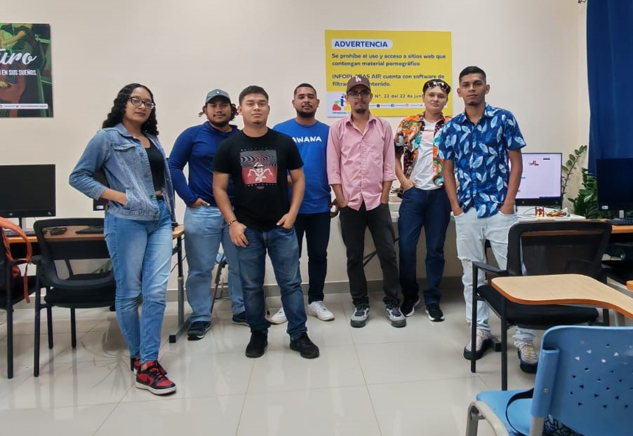

Formación en Programación y Robótica Educativa
Programa de formación tecnológica mediante Scratch y LEGO Education WeDo 9585. Los participantes desarrollan conocimientos básicos de programación, construcción de modelos robóticos y automatización, fortaleciendo el pensamiento lógico, la creatividad y el trabajo colaborativo.